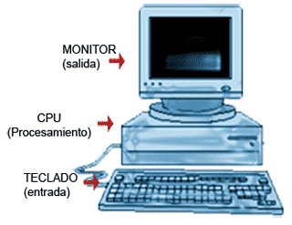

<!DOCTYPE HTML>

<html>


<title>pagina 18</title>

 <meta charset="UTF-8">

</html>
<body>
 <center><h1>	QUIEN INVENTO LA LAPTOP</center></h1>

  
<p align="justify"><font size="4" face="arial black" color="black">


<body style="background-color: white";>
<BR>


  
<table border="1" bordercolor="yellow" >
  
  
  


  
  
  
  
  
        <center></center>
  
        
  
  
  
  
  
  
</tr>
</table>
<BR>
<BR>

<table>
<tr>
<td>
  
  
  
  
  
  <br><br>
  


<table border="1">
<tr bgcolor="purple">
<td>¿Quién fue el verdadero inventor dela laptop? </td>
 
   <td>
Adam Osborne (6 de marzo de 1939-18 de marzo de 2003) fue un escritor, empresario e ingeniero de origen británico, posteriormente nacionalizado estadounidense. Lanzó al mercado el primer ordenador portátil comercial de la historia, el Osborne 1. Fue miembro de Mensa.
     Nacimiento
6 de marzo de 1939 Ver y modificar los datos en Wikidata
Bangkok (Tailandia) Ver y modificar los datos en Wikidata
Fallecimiento
18 de marzo de 2003 Ver y modificar los datos en Wikidata (64 años)
Kodaikanal (India) Ver y modificar los datos en Wikidata
Nacionalidad
Estadounidense
Religión
Hinduismo Ver y modificar los datos en Wikidata
Educación
Educado en
Universidad de Birmingham
Universidad de Delaware Ver y modificar los datos en Wikidata
Información profesional
Ocupación
Escritor, informático teórico, ingeniero y emprendedor Ver y modificar los datos en Wikidata
     
     
     
     
     
   </td>

</tr>
</table>

<table border="5">
<tr bgcolor="green">
  <br><br>
<td>  	Primeras  funciones de la laptop</td>
<td>
  
  En los computadores modernos, un usuario tiene la impresión de que los computadores pueden ejecutar varios programas «al mismo tiempo», esto se conoce como multitarea. En realidad, la CPU ejecuta instrucciones de un programa y después tras un breve periodo de tiempo, cambia la ejecución a un segundo programa y ejecuta algunas de sus instrucciones. Dado que este proceso es muy rápido, crea la ilusión de que se están ejecutando varios programas simultáneamente; en realidad se está repartiendo el tiempo de la CPU entre los programas, uno a la vez. El sistema operativo es el que controla el reparto del tiempo. El procesamiento realmente simultáneo se realiza en computadoras que poseen más de un CPU, lo que da origen al multiprocesamiento.

El sistema operativo es el programa que gestiona y administra todos los recursos del ordenador, controla, por ejemplo, qué programas se ejecutan y cuándo, administra la memoria y los accesos a los dispositivos E/S, provee las interfases entre dispositivos, incluso entre el computador y el usuario.

Actualmente se suele incluir en las distribuciones del sistema operativo algunos programas muy usados; como navegadores de Internet, procesadores de texto, programas de correo electrónico, interfaces de red, reproductores de películas y otros programas que antes se tenían que conseguir e instalar separadamente.

Los primeros computadores digitales, de gran tamaño y coste, se utilizaban principalmente para hacer cálculos científicos. ENIAC se creó con el propósito de resolver los problemas de balística del ejército de Estados Unidos. El CSIRAC, el primer ordenador australiano, permitió evaluar patrones de precipitaciones para un gran proyecto de generación hidroeléctrica.

Con la fabricación comercial de computadoras, los gobiernos y las empresas sistematizaron muchas de sus tareas de recolección y procesamiento de datos, que antes eran realizadas manualmente. En el mundo académico, los científicos de todos los campos empezaron a utilizar los computadores para hacer sus análisis y cálculos; el descenso continuado de los precios de estos aparatos permitió su uso por empresas cada vez más pequeñas. Las empresas, las organizaciones y los gobiernos empezaron a emplear un gran número de pequeños ordenadores para realizar tareas que antes eran hechas por computadores centrales grandes y costosos.

Con la invención del microprocesador en 1970, fue posible fabricar ordenadores cada vez más baratos. Nació el microcomputador y luego apareció la computadora personal, estos últimos se hicieron populares para llevar a cabo tareas rutinarias como escribir e imprimir documentos, calcular probabilidades, realizar análisis y cálculo con hojas de cálculo, comunicarse mediante correo electrónico e Internet. La gran disponibilidad de computadores y su fácil adaptación a las necesidades de cada persona, han hecho que se utilicen para una variedad de tareas, que incluyen los más diversos campos de aplicación.

Al mismo tiempo, los computadores pequeños de programación fija (sistemas embebidos) empezaron a abrirse camino entre las aplicaciones para el hogar, los automóviles, los aviones y la maquinaria industrial. Estos procesadores integrados controlaban el comportamiento de los aparatos más fácilmente, permitiendo el desarrollo de funciones de control más complejas, como por ejemplo los sistemas de freno antibloqueo (ABS). A principios del siglo XXI, la mayoría de los aparatos eléctricos, casi todos los tipos de transporte eléctrico y la mayoría de las líneas de producción de las fábricas funcionan con un computador.
  
  <br><br>
  
  
 
  
  
</td>
  
</tr>
</table>


<H3>	Expansión dela laptop y su adopción en distintas partes del mundo.<H3>

 
  Las primeras computadoras en expandirse por el mundo fueron la ENIAC (Electronic Numerical Integrator and Computer) y la UNIVAC I (Universal Automatic Computer I). La ENIAC fue la primera computadora electrónica de propósito general, aunque muy grande y pesada, mientras que la UNIVAC I fue la primera computadora comercial en Estados Unidos. 
El ENIAC (1945):
Características: La ENIAC fue una computadora electrónica de gran tamaño, que ocupaba una habitación y pesaba 30 toneladas. Utilizaba tubos de vacío para realizar cálculos.
Uso: Se utilizó principalmente para cálculos militares durante la Segunda Guerra Mundial.
Limitaciones: Era grande y costosa, lo que la hacía poco práctica para uso general. 
La UNIVAC I (1951):
Características:
La UNIVAC I fue la primera computadora comercial en Estados Unidos, y se basaba en tecnología de tubos de vacío. Era mucho más pequeña y fácil de operar que la ENIAC.
Uso:
Se utilizó para diversas aplicaciones comerciales, incluyendo procesamiento de datos, cálculos financieros y la predicción de resultados electorales.
Impacto:
La UNIVAC I fue un paso importante en la democratización de la computación, ya que demostró que las computadoras podían ser útiles en la vida cotidiana. 
En resumen:
La ENIAC fue la pionera en la computación electrónica, pero su tamaño y costo la limitaron a un uso militar.
La UNIVAC I fue la primera computadora comercial en Estados Unidos, que abrió el camino para que la computación fuera más accesible a empresas y organizaciones. 
  


<table>
<tr>
<td bgcolor="black">
  <center><h1 style="color: azure;">FUENTES CONFIABLES</h2></center>
   
        <p>
           
           
           <a href="  https://es.m.wikipedia.org/wiki/Adam_Osborne#:~:text=Adam%20Osborne%20(6%20de%20marzo,la%20historia%2C%20el%20Osborne%201"target="_blank"><font size="3"><p align="center">1-https://blog.orange.es/consejos-y-trucos/inventor-del-telefono/
    </a>
              
              
              
           </p>

</td>
          <br><br>
  
  
          
          
   <td bgcolor="black">  <center><h1 style="color: azure;">FUENTES CONFIABLES</h2></center>
   
                    <p>
                       
                       
                       <a href="https://es.m.wikipedia.org/wiki/Computadora#:~:text=Los%20primeros%20computadores%20digitales%2C%20de,del%20ej%C3%A9rcito%20de%20Estados%20Unidos"target="_blank"><font size="3"><p align="center">2-https://www.infobae.com/tecno/2017/02/17/cual-fue-el-primer-telefono-celular-que-se-lanzo-al-mercado/
                </a>
                          
                          
                          
                       </p>
</td>
       

                  <center></center>
  
                    
         
            <button style="font-size: 40PX;" ><a href="pagina19.html" >ir ala pagina 19</a></button>
   
                  
                      
                      
                        


</body>
</html>